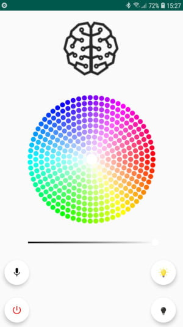
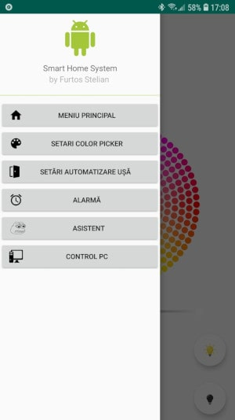
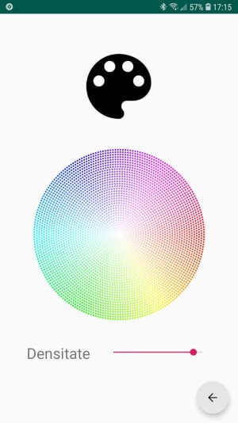
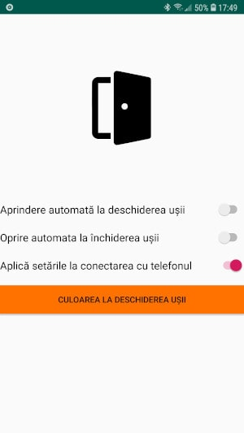
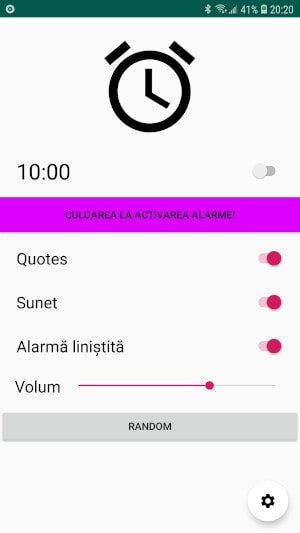
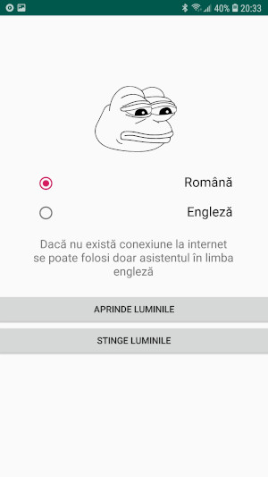
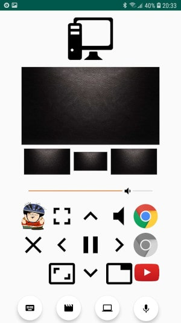
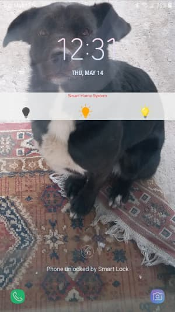
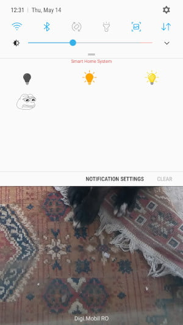

Prezentare generală
Controlează ușor led strip-uri printr-o interfață interactivă și intuitivă, setează alarme care să îți aprindă automat luminile, modifică parametrii din Arduino, comandă calculatorul de la distanță și utilizează comenzi vocale pentru majoritatea funcțiilor.
Meniul principal
Din acest meniu poți să alegi modulul bluetooth la care vrei să te conectezi, să controlezi lumina led-urilor glisând degetul peste color wheel, poți seta și intensitatea led-urilor, apăsând butonul 'microfon' activezi asistentul vocal la care poți să îi dictezi comenzi.
Bara de opțiuni
Aceasta va apărea la un right swipe din partea stângă a ecranului și din ea se poate accesa fiecare sub-meniu a aplicației
Setări color-picker
De aici poți seta densitatea culorilor din color wheel
Setări ușă
Prin acest meniu poți alege daca luminile se vor aprinde atunci cand ușa este deschisă sau daca se vor stinge atunci când ușa este închisă
Alarmă
Setează o alarmă și configurează setările acesteia după placul tău
Asistent
Pe lângă opțiunea de selectare a limbii, acest meniu arată și indicații asupra folosirii diferitelor comenzi vocale nu am updatat încă acest meniu cu toate comenzile suportate, momentan asistentul vocal suportă comenzi de genul: 'aprinde lumina', 'stinge lumina', 'portocaliu 15%', 'trezește-mă peste două ore', 'pune piesa angel of death', ș.a.m.d.
PC Control
De aici poți să te conectezi cu aplicația ce rulează pe desktop pentru a controla calculatorul prin telefon, această conexiune poate fi realizată fie prin LAN, fie prin bluetooth. Meniul conține butoane de media, tastatură, mouse și shortcut pentru a stinge calculatorul, atunci când utilizatorul impune comanda vocală 'pune o piesă', piesa specificată de acesta va fi redata pe desktop, nu pe telefon.
Notificare
Funcțiile aplicației pot fi accesate și din bara de notificări, de aici se poate stinge lumina sau aprinde lumina cu diferite culori
Notificare extinsă
Prin glisarea în jos a notificării apar mai multe opțiuni de control, printre care momentan se află doar accesul la asistentul vocal